Preparando líderes
para la nueva CubaPreparing leaders
for the new Cuba

140 estudiantes cubanos se graduaron con su título de maestría. Con los recursos adecuados, este movimiento puede extenderse por toda la isla.
140 Cuban students have graduated with their master's degree. With the right resources, this movement can spread across the island.
Estudiantes reales. Formación real. Una generación preparándose para servir.
Real students. Real formation. A generation preparing to serve.
Obtuvieron su título de maestría
They earned their master's degree
Wagner University Cuba no es un plan en papel. Estos graduados ya están preparados para servir a sus iglesias, sus familias y sus comunidades.
Wagner University Cuba is not a plan on paper. These graduates are already prepared to serve their churches, families, and communities.
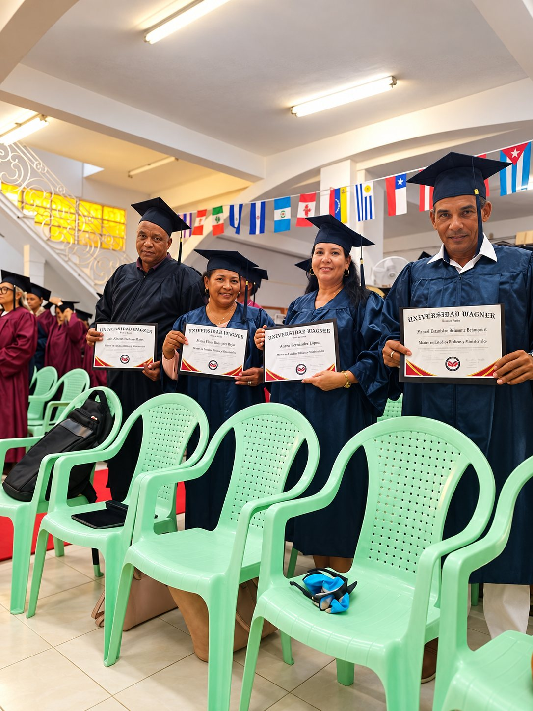
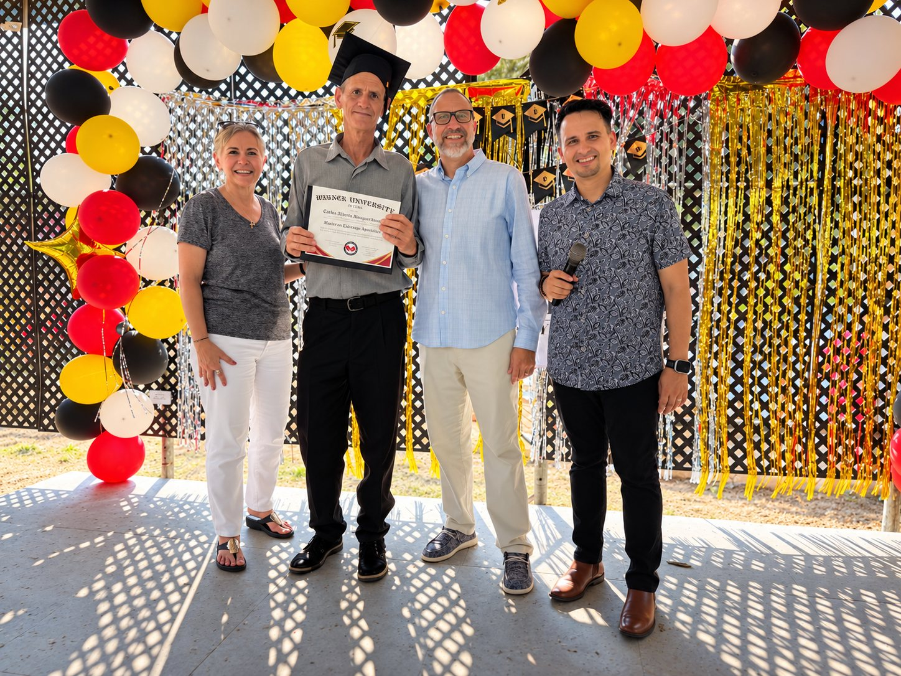
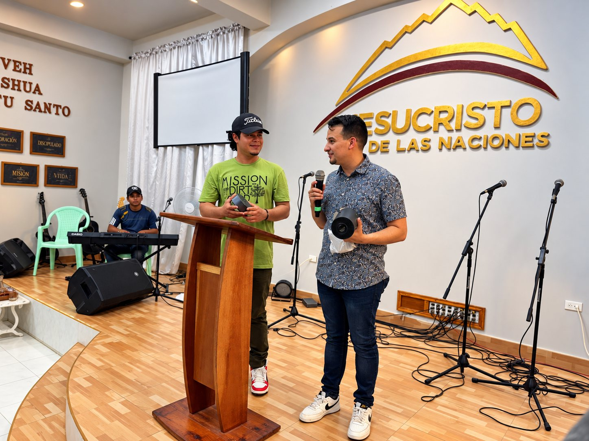
Estudiaron atravesando lo que la mayoría nunca enfrenta
They studied through what most of us never face
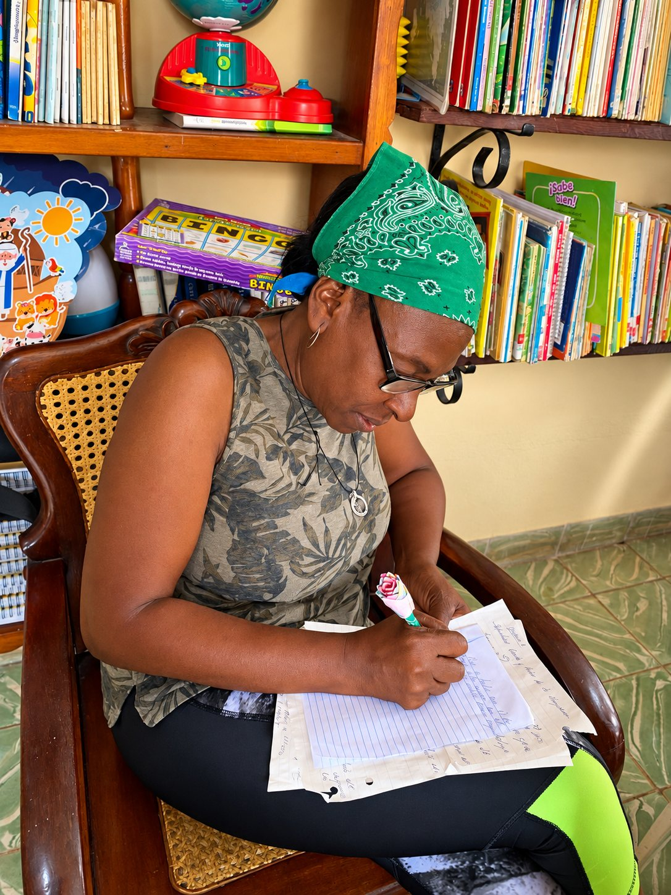
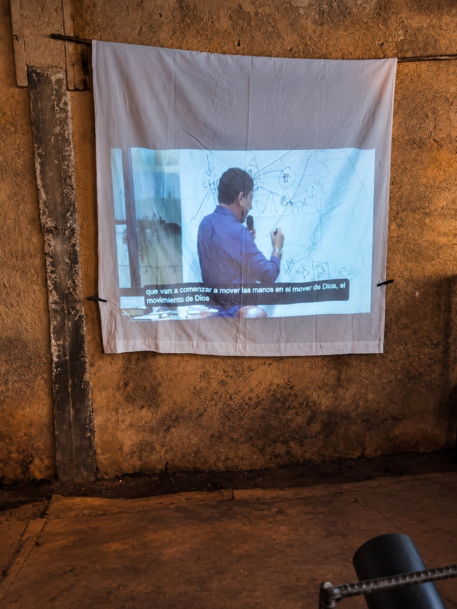
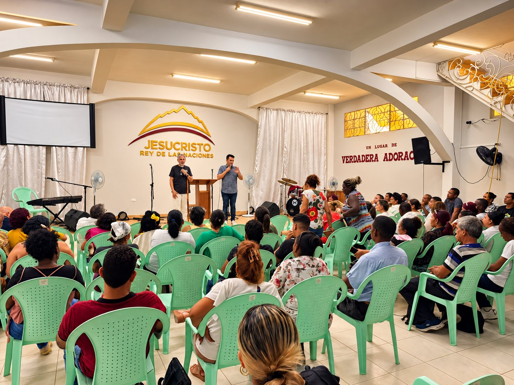
Aun hoy tienen hambre de ser educados en el Reino
Even now, they are hungry to be educated in the Kingdom
En un país donde la energía falla y la comida escasea, las personas se siguen reuniendo en casas y salones de iglesia pidiendo el siguiente nivel de formación.
In a country where power fails and food is scarce, people still gather in homes and church halls asking for the next level of formation.
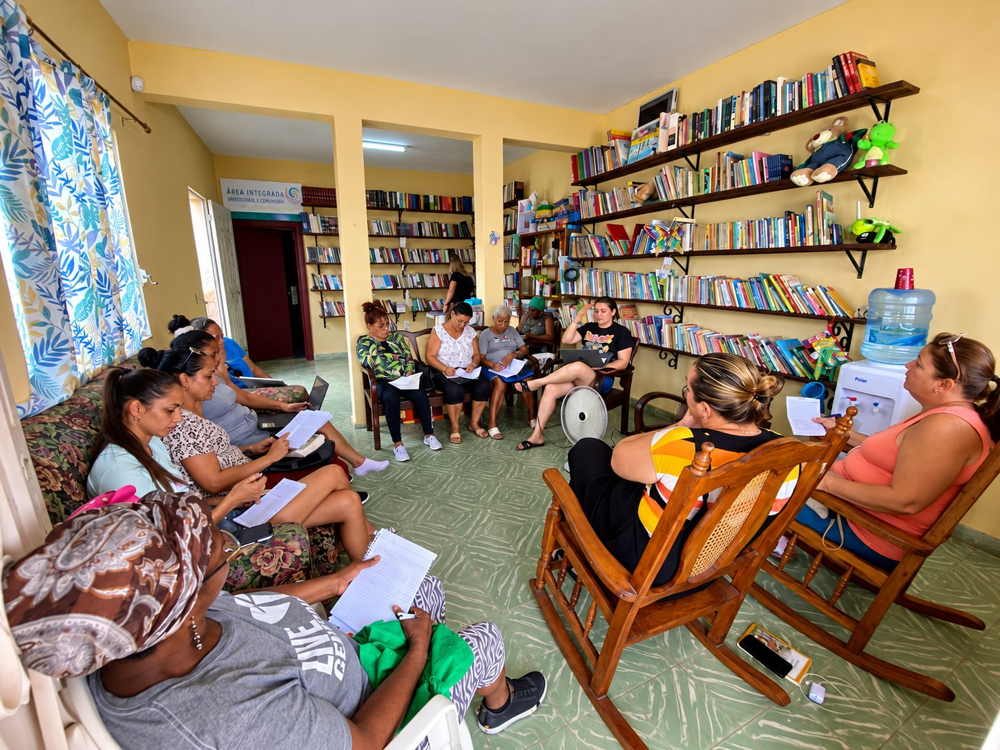
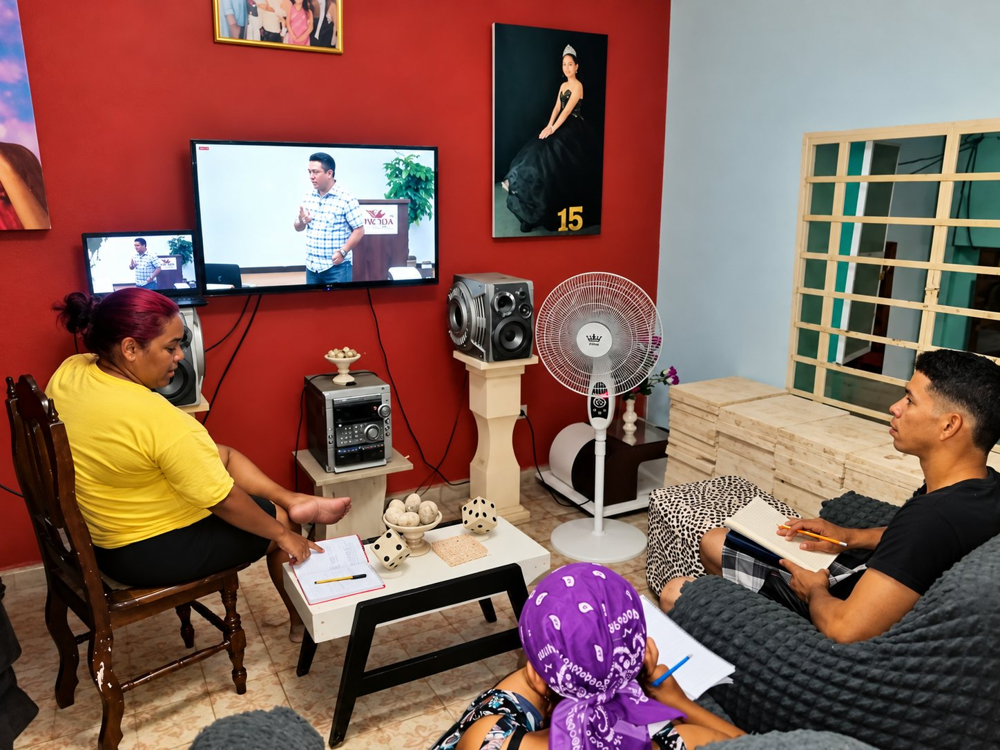
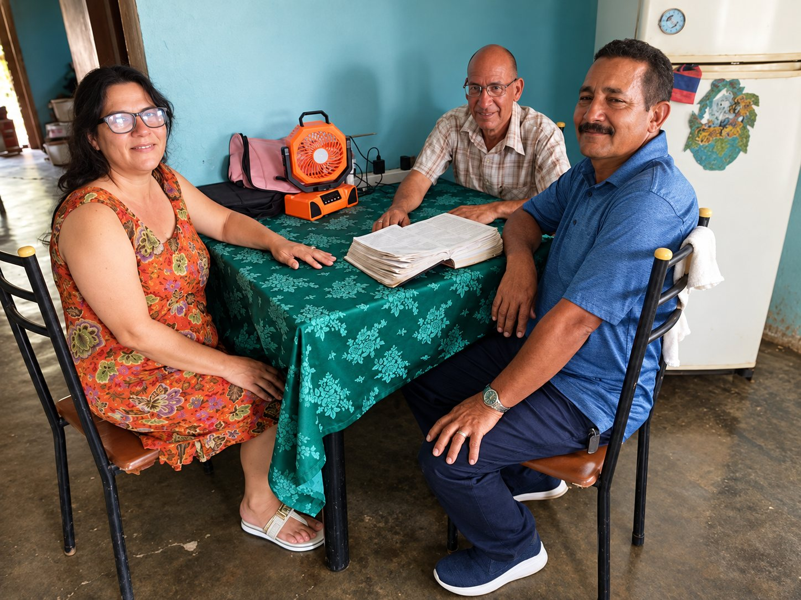
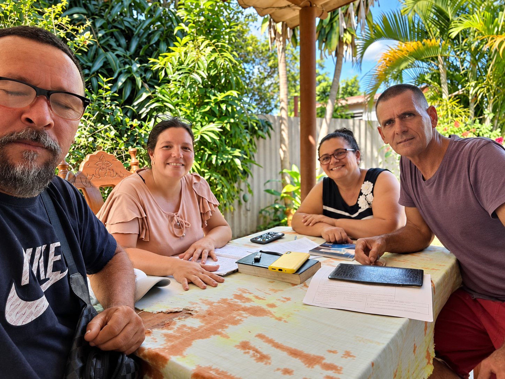
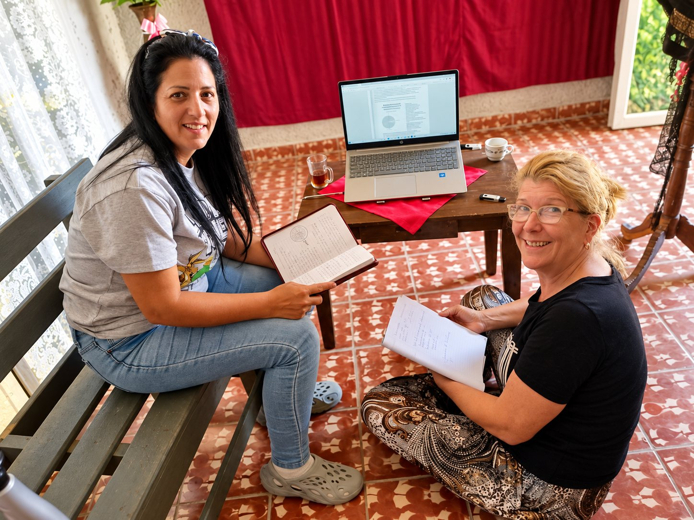
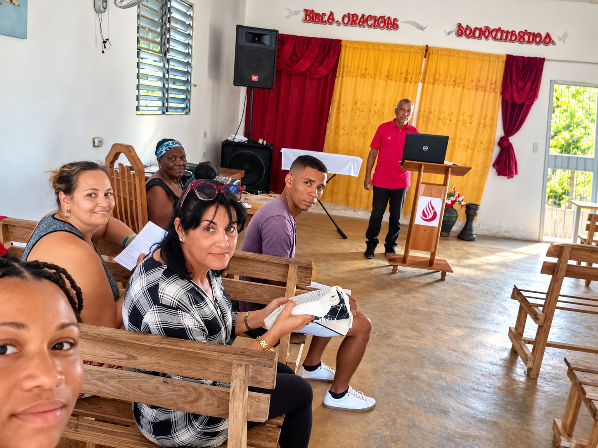
Cualquier lugar donde haya un líder capacitado puede ser un aula.
Anywhere there is a trained leader can become a classroom.
Con los recursos adecuados,
Wagner puede expandirse como fuego
With the right resources,
Wagner can spread like wildfire
El modelo es simple, relacional y profundamente local: una red distribuida, no un solo edificio. Un proyector solar, una memoria USB y un líder local capacitado pueden convertir cualquier sala de estar en un aula.
The model is simple, relational, and deeply local — a distributed network, not a single building. A solar projector, a flash drive, and a trained local leader can turn any living room into a classroom.
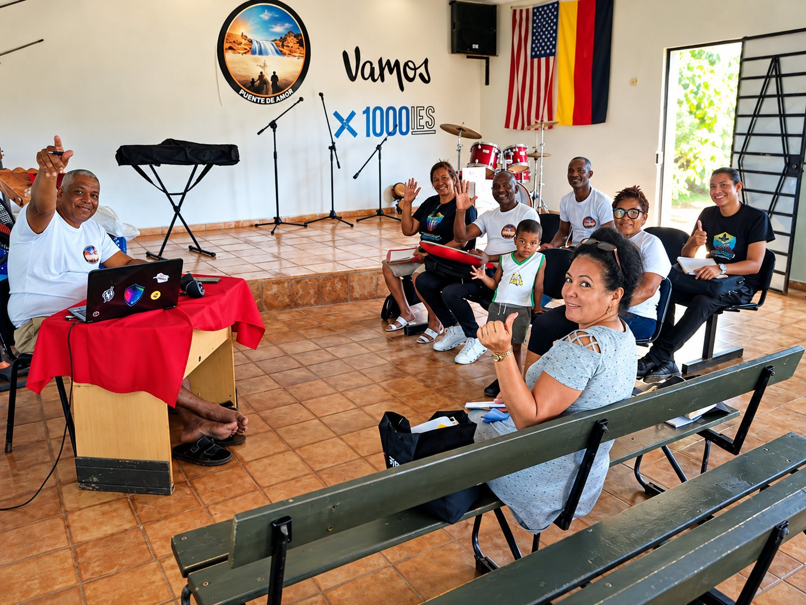
No es un edificio.
Son personas.
It is not a building.
It is people.
Cada cohorte nace de un líder local que ya sirve a su comunidad. Wagner no construye campus: multiplica maestros. Por eso un grupo puede empezar en una semana y no en una década.
Each cohort begins with a local leader already serving their community. Wagner does not build campuses: it multiplies teachers. That is why a group can begin in a week and not in a decade.
Esto es más grande que un título.
This is bigger than a degree.
Si Cuba entra en una transición política y económica pos-comunista, la pregunta no será solamente quién gobierna, sino quién está preparado para servir. La Iglesia aprendió a resistir bajo presión. Una nueva temporada también requerirá líderes con educación, sabiduría, carácter y capacidad práctica para ayudar a fortalecer comunidades e instituciones.
If Cuba enters a post-communist political and economic transition, the question will not only be who leads — but who is prepared to serve. The Church has learned how to endure under pressure. A new season will also require leaders with education, wisdom, character, and practical ability to help strengthen communities and institutions.
No tenemos tiempo que esperar. No podemos decir: «esperemos un par de años para expandir Wagner University en Cuba». Este podría ser el recurso que necesitamos para liberar nuestra nación, y para gobernarla bien una vez que seamos libres.
We do not have time to wait. We cannot say, "Let's wait a couple of years to expand Wagner University in Cuba." This could be the resource we need to free our nation — and to govern it well once we are free.
Esto no es simplemente una iniciativa para ver a más de 10.000 estudiantes cubanos atravesar una formación de nivel de maestría.
This is not simply an initiative to see more than 10,000 Cuban students move through master's-level formation.
La educación no es la meta final. La meta son líderes preparados para ayudar a restaurar comunidades, crear oportunidades, fortalecer instituciones y servir a Cuba por generaciones.
Education is not the final goal. The goal is leaders prepared to help restore communities, create opportunity, strengthen institutions, and serve Cuba for generations to come.
Una meta. Una generación.
Una visión nacional.
One goal. One generation.
One national vision.
Ningún regalo es pequeño cuando ayuda a preparar a un líder.
No small gift is small when it helps prepare a leader.
Sirve a la nación.
Serve the nation.
¿Nos ayudas a preparar la generación
que puede ayudar a restaurar Cuba?
Will you help prepare the generation
that can help restore Cuba?
Acompáñanos y conoce el trabajo de primera mano.
Join us and see the work firsthand.
Ayuda a alcanzar la meta de $100.000 de la primera fase.
Help reach the $100,000 first-phase goal.
Sostén en oración a los estudiantes y a los líderes.
Stand with the students and leaders.